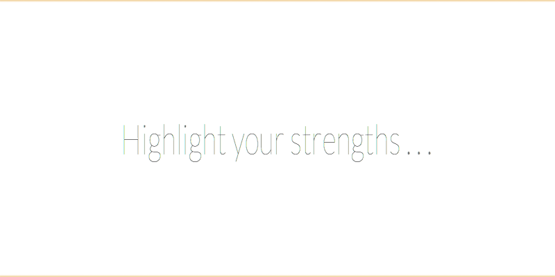

GalleryComm 395

Featured Posts
- April Fools! Congrats to Our REAL March 2016 Challenge Winner, Lost_Pathfinder! :P
by /u/clockworklycanthrope (on Friday Apr 1st) - [Critique] First chapter of 'By Grace of Moonlight', 2700 words
by /u/lynkfox (on Saturday Apr 2nd) - Winning your battles with brute force is lame. How do you write a satisfying end for your big bads?
by /u/DontRockTheGoat (on Friday Apr 1st) - Seeking critique for prologue and first chapter of Almost Night II (~2300 words)
by /u/Jacob_wallace (on Saturday Apr 2nd) - Drug use in Fantasy
by /u/HoneycombPerc (on Friday Apr 1st)

CARD TITLE
A slightly longer and smaller bit of text.